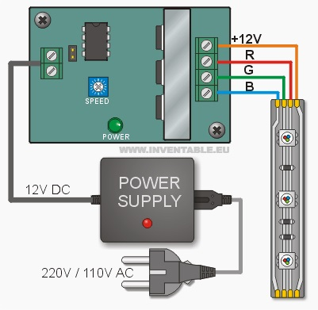
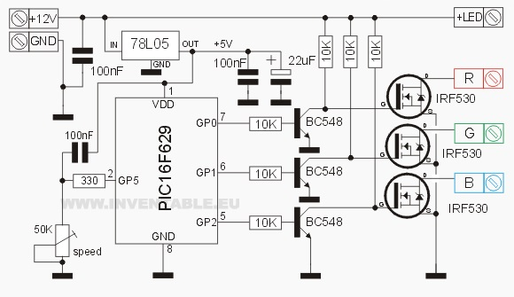
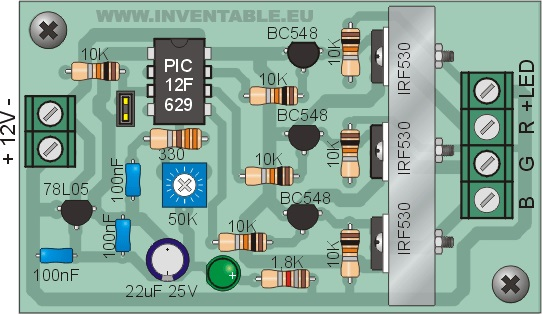
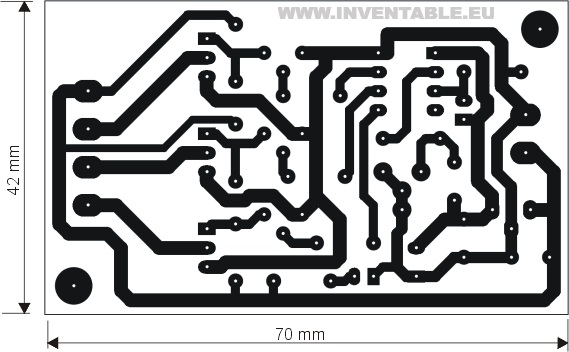
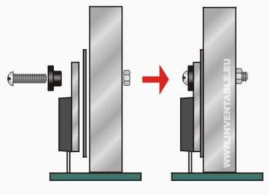

Idioma: English
ESTAPA ELECTRONICA DIGITAL DEL PROYECTO
El Controlador para Tiras RGB
Aquí describiremos la realización del controlador para las tiras LED que usaremos en nuestras lámparas. El sistema que presentamos tiene la gran ventaja de usar 3 MOSFETs de altísima potencia de salida (uno para cada canal) que nos permiten de conectar muchos metros de tiras de leds.
El regulador de color trabaja sobre tres canales (rojo, verde y azul, cuya sigla en inglés es RGB) variando continuamente la intensidad de ellos. Como el ciclo de encendido y apagado es levemente distinto entre los 3 canales, se obtienen todos los colores posibles con transiciones progresivas.
El Circuito
El circuito usa un microcontrolador PIC12F629 de la Microchip. Debido a que el programa está hecho sin usar ninguna de las funciones especiales del micro (timer, ADC, etc.), con pequeñas modificaciones del listado se puede reemplazar por cualquier micro de la Microchip.
El trimmer permite de regular la velocidad de transición de los colores. Para leer el trimmer he desarrollado una función especial que mide el tiempo de descarga de un capacitor conectado a uno de los pin del micro.
La corriente que va a los leds, a través de los transistores, no pasa por este regulador y por lo tanto podemos usar le versión 78L05 de baja corriente, que es muy pequeña y económica (parece un transistor). Los capacitores de 100nF y de 22uF 25V sirven para filtrar la alimentación de 12V. La velocidad de variación de la luces se controla con un trimmer (o preset) de 50K. Este será reemplazado con un potenciómetro del mismo valor montado directamente en la plaqueta como se observa en las fotografías o externamente, conectándolo a través de cables cortos a la plaqueta.
Montaje
Para obtener la máxima potencia de este circuito, es necesario montar un disipador de calor para los MOSFETs. Para ello he pensado de usar un disipador casero hecho simplemente con un perfil rectangular de aluminio de 1 cm. de ancho. La altura y la longitud puede ser cualquiera. Naturalmente más grande es el disipador, más potencia se puede obtener de nuestro circuito. En el prototipo que se ve en las fotografías y en los diseños yo he usado un perfil de 4 cm. x 1 cm. de ancho x 2 cm. de altura.
El trimmer permite de regular la velocidad de transición de los colores. Para leer el trimmer he desarrollado una función especial que mide el tiempo de descarga de un capacitor conectado a uno de los pin del micro.
Nuestra Propuesta de Proyecto y Diagrama de Gantt
En esta seccion se visualizara la elección de nuestro proyecto y que esta cumpla con los requerimientos correctamente.
Diagrama de Gant
El diagrama de Gantt es una herramienta gráfica cuyo objetivo es exponer el tiempo de dedicación previsto para diferentes tareas o actividades a lo largo de un tiempo total determinado; en este caso lo utilizaremos para poner en marcha el proyecto del sistema de seguridad.
Archivo - Diagrama de GantEleccion de Nuestra Propuesta de Proyecto
Realizamos la elección de nuestro proyecto cumpliendo los requerimientos de cada actividad.
Elenco de componentes
1 resistencia de 330 ohms 1/4 Watt
1 resistencia de 1,8K 1/4 Watt
7 resistencias de 10K 1/4 Watt
1 trimmer o potenciómetro de 50K
3 capacitores de 100nF
1 capacitor 22uF 25V
1 led verde de 3mm
3 transistores BC548 (o BC547)
3 transistores mosfet IRF530
1 PIC12F629
1 regulador 78L05
1 zócalo para circuito integrado de 8 pins
1 puente (jumper) de dos pins (opcional)
1 conector con bornes de dos vías
1 conector con bornes de 4 vías
1 disipador de calor (ver texto)
3 kits para montaje de TO-220 a un disipador